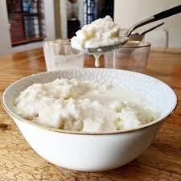

Umphokoqo

Description
Umphokoqo is a South African well-known dish, especially in the Xhosa tribe. It is casually dubbed as the African Salad by Xhosa people. The dish consists of dry crumbs of salted pap mixed with Amasi (sour fermented milk). Below is the easy recipe for this delicious African dish that can be tried by anyone anywhere in the world with only four ingredients!
Ingredients
- Maize Meal/Mealie Meal
- Water
- Salt
- Amasi
Steps
- Boil water of about 2 cups, adding 1 tablespoon of salt before boiling.
- Add 2 cups or more of the maize meal and stir using a fork until the pap is crumbly.
- Let the dish steam at low heat for about 10 minutes. Stir once again and let it steam for another 10 minutes.
- Repeat the process for 30 minutes, or at least until the dish is fluffy and fresh.
- Turn off the heat, let the dish cool down and finally serve with Amasi by covering the whole dish with it (Add some milk if you'd like to make it thinner), stir and combine Amasi and the crumbly pap and ENJOY!
Home